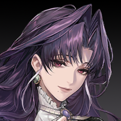
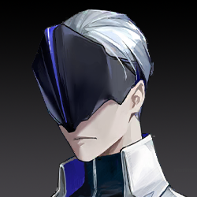
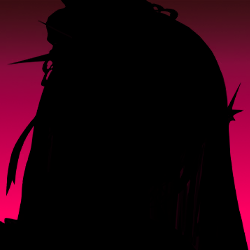
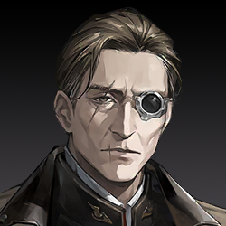
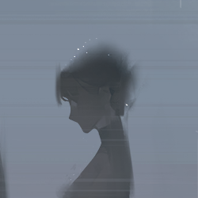
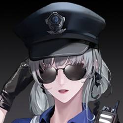

N.F.113年7月23日 08:05
セヴェロの仕立て屋
概要：数日間、セヴェロはエリカ山荘の警備員（能力者を含む）と何度も正面衝突した。「GARDEN」に戻って休息しようとした矢先、
調査員が訪ねてくる。
セヴェロは一瞬の情け深き、自身と「同じ境遇」に見える調査員を引き込もうとし、「上庭に傷つけられた同類」だと説得、
「GARDEN」の首領レオポルドが復讐を助けられると伝えた。しかし、その優しさは強く拒絶され、逆に調査員に裏切られた。最終的にセヴェロは罠に落ち、能力者対策の部隊に制圧され、昏迷状態に陥る。調査員もSan値が限界に達し、一時的に行動不能となる。
襲撃の後、商業街の朝はひときわ静かだ。警員たちはXの宅邸周辺に集まり、捜査と警戒に追われている。遠くのエリアには、運の悪い数人だけが巡回に派遣されている。
微雨の薄いカーテンの中、ひとりの女性が花を抱え、静かな歩行者専用通りを独り歩く。見知った警員たちとすれ違う際、軽く会釈するが、彼らの不安には深入りせず、多くを尋ねなかった。
こうして、彼女はゆっくりと仕立て屋に戻る。ドアが施錠されていないことに気づき、一瞬立ち止まり、微笑みながら傘を閉じ、自分の仕立て屋に押し入る。

こんな朝早く、誰かと思ったよ。
こんにちは、お客様。この数日はお店をお休みしてます。礼服のオーダーをご希望なら、数日後にまたお越しください。
調査員は答えず、女主人が手に持つ花を花瓶に挿す姿を見つめる。それは白いカーネーションだった。
ありがとう、思う人がですね…カーネーションが好きです、私に似ているからって。
彼はFACの人間だった。数年前に怪我で退役してたのに、西区で事件が起きて、緊急で呼び戻された。それから…葬式だった。
女性は声を詰まらせ、横に手をやって涙を拭う。表情は悲しみに満ちていた。
ごめん、墓地から戻ったばかりで、気持ちの整理がついてないの。
その制服、FACの部隊のものよね…今はサービスを提供できないけど、ここにある花なら自由に持ってっていいよ。
もし、お前にも追悼したい人がいるなら…
お前は知らないかもしれないけど、西区の情勢はかなり悪い。犠牲者が多くて、汚染された遺体の処理に時間がかかる。公祭もつい最近延期された。もしお前の夫がそこで死に、埋葬は早くても来月になる。

……私…あっ！
言葉が終わる前に、盾がまっすぐ突進し、振り下ろされ、女主人の足元の床を一撃で砕く。白いカーネーションが散り、花びらが乱舞する中、婦人はすでにそこにいなかった。
数本の銀光が刺し掛かり、調査員は盾で防ぐ。攻撃の源を見ると、数体のマネキンの後ろで、悲しげな寡婦はすでに不満と揶揄の表情に変わっていた。

ったく、せっかちな人ね。こんな小さな問題、私ならちゃんと説明できたのに。
必要ないよ。こんな攻撃を避けた時点で、お前の実力はすべてを物語ってる。何度かやり合ったことあるよね、殺し屋さん。お前の動き、忘れられないよ。
ふふ、冗談まで言える？気分いいね、ボディガードさん。その笑顔、ずっとキープしてなよ。一生ずっと…
だって、人生なんて一瞬で終わっちゃうこともあるんだから。
女が手に持つ長い針をくるりと回し、マネキンの背中に力強く突き刺す。カチカチ――隠された仕掛けが同時に作動し、調査員に向かって攻撃を仕掛ける。
N.F.113年7月23日 08:05
セヴェロの仕立て屋
概要：数日間、セヴェロはエリカ山荘の警備員（能力者を含む）と何度も正面衝突した。「GARDEN」に戻って休息しようとした矢先、
調査員が訪ねてくる。
セヴェロは一瞬の情け深き、自身と「同じ境遇」に見える調査員を引き込もうとし、「上庭に傷つけられた同類」だと説得、
「GARDEN」の首領レオポルドが復讐を助けられると伝えた。しかし、その優しさは強く拒絶され、逆に調査員に裏切られた。最終的にセヴェロは罠に落ち、能力者対策の部隊に制圧され、昏迷状態に陥る。調査員もSan値が限界に達し、一時的に行動不能となる。
もう、FACの伝統って優しく礼儀正しいことじゃなかった？なんで私にはそんな乱暴なのさ。戦友の未亡人なんだから、ちょっと手加減してよ、ね？
めっちゃ下手な殺し屋だね。嘘八百ならまだしも、こんなに無駄話が多いなんて笑えるよ。
彼女は大盾を振り上げ、接客用の丸テーブルを「店主」めがけて投げる。女は身を翻してかわし、片手で数本の弩矢を引き抜いて反撃。両者はその勢いで距離を取る。
西区に新しい黒環ができたよね。お前の仲間、どれだけそこで死んだ？知ってるよ、FACの誇らしい伝統――意味のない、わけわかんない「偉大な犠牲」を崇めること。だからさ、むしろ私たち、同病相憐れむべきじゃない？もっと話すべきだよ…っと！
彼女は叫びながら二度目の攻撃をかわす。それは至近距離での突撃だったが、空を切った。調査員は自分の動きが遅くなり、身体が思うように動かなくなっていることに気づく。
正解、さすがだね。お前たちの戦い方、知ってるよ。怪物と正面からぶつかり合うのが好きで、怖がらず避けず、いつも命を惜しまず盾になる。これに対抗するには、この手が一番効くの。
おっと、動かないで。この毒にはちょっとだけ狂厄の汚染が混ざってる。もし異方晶持ってるなら、静かに浄化を待った方がいい。今はまだお前を傷つけたくないから。
殺し屋は追撃せず、逆に顔の軽薄な笑みが徐々に消える。
この4ヶ月、城邦のすべての黒環が活発化して、FACの全戦力は正面戦場に投入されてる。新城の悪質な事件に対応する余裕なんてないから、ずっと前に第九機関に引き継がれてるよね。
ボディガード、いや、FAC-G47小隊の能力者、お前がここにいるはずない。上級からの援護命令なんて出てないでしょ。
勝手に新城に戻って、関係ない事件に無理やり介入して、手がかり見つけても報告せず、単独で私みたいな「殺し屋」に会いに来た…お前の能力者の力だって、クリーンじゃないよね？
身FACとして、服従と忠誠がお前の務めなのに、お前はあまりにも多くの一線を越えた。どれか一つでも、裁判沙汰になるよ。
…いや、お前のこと、お前が思う以上に理解してるよ。
お前は内海の「蝕月作戦」に参加して、唯一の生き残り。ここに来たのは復讐のためだけだよね。
103年、FACは緊急命令を受け、28の中隊が秘密裏に内海へ向かい、BR-000に突入。情報も時間も不足の中で、作戦は何の成果も上げず、お前以外全員戦死。
愚かな作戦だった。でも事後、戦術を立案した指揮官は姿を消し、すべての損失と責任はFACに押し付けられた。
こんなこと知ったら、誰だって納得いかないよ。私たちと同じさ。
私の父はFACの後方支援部で輸送員だった。N.F.83年、基地で、作戦から持ち帰った異物に感染して、死ぬまでそれが何かわからなかった。
父は狂厄に侵され、混乱の中で検疫も受けず家に帰り、母や妹の前で怪物に変わった…
お前と同じ、あの夜、私も惨めな生き残りだった。お前の憎しみ、わかるよ。
この何年も、お前はたくさんのものを犠牲にして、能力者になって、ひとりで憎しみを耐え抜いて上庭の犬になった。それでも、黒幕の端っこにも触れられない。
お前が歩いてるこの真っ暗で冷たい道、私も同じように歩いてきた。
私たちの人生は一瞬で崩れ、すべて壊された。正義なんて誰も返してくれない。だから、自分で取り戻すしかない。この世界には、多少なりとも道理があるべきじゃない？
彼女は調査員に手を差し出し、紫のカーネーションを渡す。
お前の敵じゃない、同類だ。お前にはまだたくさんの同類がいるよ。
この世には私たちを受け入れてくれる場所がある。理解してくれる人がいる。彼女はお前を導き、過酷な復讐を支えてくれる。お前にその覚悟があれば、私が彼女に会わせてあげる。
お前が言うその人は、お前の雇い主？それともお前たちの組織の首領？
彼女の答えは誠実で、その感情が調査員に伝わったようだ。FACの戦士はしばらく黙り込む。
じゃあ、お前が放った汚染や、連れてきた怪物も、彼女がくれた「助け」？それで「復讐」するの？この数日で死んだ普通の人たちが何の罪を犯した？彼らがお前に命を奪われる理由は？
殺し屋は敵意を鋭く感じ取り、目に一瞬の遺憾が閃く。彼女は数本の長い針を手に取り、毒素の効果時間を計算しながら、最後の説得を試みる。
彼らはみな上庭の人間だ。上庭は決して無垢じゃない、みんなくそくらえの敵だ。一番強く、一番恐ろしい敵。
お前が命がけで能力者になったように、私も彼らに対抗する力が必要だった。手に入れるために戦い、捨てるものもあった。
復讐はすべてを捧げるもの。お前が一番わかってるよね？今、お前にはそのチャンスがある。私たちが助けてあげるよ。
…もしお前の言うことが本当なら、わかったよ。「私たち」なんていない。ふざけるな、私とお前を一緒にするな。
彼女は体に装着していた異方晶を外し、投げ捨て、両手で大盾を叩きつける。体内の毒素は、より激しい狂厄によって中和され、同化される。
お前…裏のゴロツキのために働いて、狂厄を乱用して無辜の人々を殺し、復讐を口実に悪事を働く。お前は私の仲間なんかじゃない、ただの利用されてるピエロだ。
…本当に残念だ。本気でお前を家に連れて帰りたかった。
両者の力の差は歴然で、一瞬にしてセヴェロは地面に叩きつけられ、戦闘不能に。続けて大盾が彼女に重くのしかかり、床に押さえつけられて動けなくなる。
うっ…咳咳、なんて恐ろしい力…こんな力手に入れるために、どんな悪事を働いた？お前の愛するFACは知ってる？
お前の背後にいる奴は誰？「家族」って呼んでるくらいだから、仲いいんだろ？お前を捕まえたら、彼女が自分から現れるかな？
上庭に入りたい。上庭はお前たちを欲しがってる。だから、見ず知らずの礼として、お前とお前の背後の奴がちょうどいい。
…なるほど、お前たちが欲しいのは私だけじゃないってわけね…
さあ、選べ。自分から白状するか、お前の「家族」が助けに来るのを待つか。彼女が復讐者の救世主なら、きっと来るよね？
ふふふ…そう見ると、お前には悪鬼の才能があるね…正義にこだわるのやめたら？もうFACには向いてないよ。
大盾が再び強く叩きつけられ、骨が折れる音が聞こえたようだ。セヴェロは痛みにうめきながらも、顔には弱々しくも陶酔した笑みが浮かぶ。今、彼女の目にはもはや優しい誘いはなく、憎悪と殺意だけが宿っている。
ふふふ、10年も耐えたのに、今さら急いでどうするの？モノはもう渡したよ…あの花箋、見た？読めなかった？
中に何が入ってるか、はっきり言え。暗号ゲームはごめんだ。
調査員は眉をひそめ、力を込めるが、殺し屋の身体は今、水のように柔らかく、すべての暴力がスポンジに吸い込まれるようだ。彼女の顔の笑みはますます深く、不快感を与える。
（OJAJPTTJの字母Oを0に置き換え、残りの字母を携帯の九宮格キーボードに基づいて数字に変換し、最終的に「05257885」を得る）
通信暗号だよ。蝕月作戦期間中、唯一内海の黒環を貫通した情報番号。この番号を通じて、環内のお前たちに命令が下された。発信元は誰も見つけられない上庭だ。
彼女はゆったりと話し、突然地面のほぼ見えない糸を引っ張る。壁の仕掛けが作動し、数本の長い針がシュッと飛び出し、針には怪しい術式が絡まる。調査員は大盾を離さず、腕でその攻撃を硬く受け止める。
今度の針には神経毒素ではなく、もっと邪悪で穢れた何か…まるで生き物のように調査員の身体と意識に潜り込む。彼女の視界は徐々に赤く染まり、敵の声は遠くなる。
気づいた？この通信の向こう側が、お前がディスを10年探しても見つけられなかった仇だよ。
その悪夢のような数字の羅列が調査員の脳を占領し、体内で沸騰する狂厄を点火する。同時に、決して逃れられなかった狂気の記憶を呼び覚ます。
内海が予定より早く満潮を迎え、この臨時防線じゃ持ちこたえられない！撤退を要請する！撤退しなきゃ！！
05257885：障壁突破、超環観測錨点構築、狂厄ノイズ排除、リンク安定。
05257885：みなさん、こんにちは。蝕月作戦の全作戦要員へ。私は上庭の観察者兼連絡員です。データ収集と戦場分析を終え、決定は――作戦続行。
05257885：目標は一つ、任務完了まで内海の満潮を最大限に食い止めること。私はみなさんの再配置を支援します。環内相対時間で計算すると、残存戦力で約34分間耐えられます。
みなさんの精神状態が限界に達していることは理解しています。だから、良い知らせも持ってきました。
05257885：救援部隊はすでに内海の奥深くに進んでいます。あと少し持ちこたえてください。満潮を食い止め、ウィンドウピリオドを44分まで延ばせば、彼らは臨時堤防に到着します。
気合を入れ直してください。みなさんがいる場所は、意志だけで現実を覆せる領域です。そして、みなさんはこの城邦で最も堅く、最も勇敢な人々です。
…嘘だろ…3時間も耐えたのに、救援なんて来なかった…俺たちを騙して死なせただけじゃないか…
05257885：今回の作戦は重大な意義を持ち、FACの皆さんに頼るしかありません。上庭は皆さんに最大の敬意を表します。
鋭い異物が調査員の鎖骨に突き刺さり、激痛を借りて、調査員はようやく狂乱から抜け出し、必死に目を開けて現実に引き戻される。
だが、セヴェロはすでに大盾の圧制から脱し、笑顔のまま、弱々しくも勝利者の傲慢さを漂わせる。彼女はゆっくりと調査員の身体に突き刺した長い針を回し、毒と汚染をさらに深く敵の体内に送り込む。
…その番号、どこで手に入れた？なんでそんなに知ってるんだ？
この番号は調査員が唯一持つその人物に関する手がかりだった。10年覚え、10年探し続け、悪夢の外では二度と見つけられなかった。今、この女がその最も重い秘密を軽々と口にし、しかも「唯一の生き残り」の自分よりもその番号の背後の情報を知っている。
焦るなよ、今まさに教えてあげようとしてるじゃない。
私は狂厄を売りさばく奴らと取引して、汚い依頼を受けて、ほんの少しの情報をかき集め、汚れた力を手に入れた。奴らがろくでもないのは知ってる。どうでもいいさ。
黒幕に触れられるのは、日の目を見ないクズどもだけだ。奴らなら上庭の偽装を切り裂いて、偉そうな奴らにちょっとした頭痛を与えられる。
お前や私みたいな普通の人間に、そんなことできると思う？
シュッ！もう一本の針が調査員のもう片方の肩に突き刺さり、毒と狂厄がさらに深く侵食する。狂気がこの怒りに瀕する戦士を苛む。
私、襲った上庭人の中に無辜な人がいるって知ってるよ。でも、みんなくそくらえで役に立つんだ。
彼女は三本目の針を取り出すが、急いで刺さず、調査員の胸元に移動させ、針の先でゆっくりと心臓を探るように描く。
上庭の連中はいつも行方を隠してる。外の人間は上庭がどこにあるかもわからない。でも最近、何人かの上庭人が新城に降りてきた。お前も私も知ってるよね、彼らは西区のトラブルを解決しに来たんだ。間違いなく重要な連中だ。
だからこうやって出会ったんだ。この貴重な突破口を利用して、上庭の情報を探り、上庭に潜り込むために。
お前は保護任務に無理やり介入して、信頼を得ようとした。よくやってるよ、「正直な」FAC。でも、どんなに頑張っても、あの貴人たちは犬を上庭に連れて帰らない。あの連中の口から情報を引き出すには、こうするしかない――
針の先が少し力を込め、調査員のコートの前を切り裂く。ポケットから花箋が覗く。セヴェロは手を伸ばし、それを取り上げる。
これは予告状、狩りのリストに載ってる上庭人全員にあらかじめ送ってる。賢い上庭人ならわかるよ、これは脅迫状じゃない――大慈悲で与えた一縷の生還のチャンスだ。
謎は難しくない。彼らは私が何を求めてるか知ってる。生き延びたければ教えてくれるよ。明朗会計、情報を渡して命を買い取る。話すと思う？
知らない人間だっている。彼らの周りに無関係な人だっているのに、お前は一緒に――
そう、一緒に！これこそ必要な犠牲じゃない？彼らは理解してくれるよ。こうやって機会の重さがよりはっきりする。
誰かは白状するよ、実際もう白状した奴もいる。これが機会の正しい使い方、本当の復讐だ。私はすべてを捨てて地獄に落ちてもいい。お前はどう？
10年だよ。この空気を切り裂く力以外、お前は何を成し遂げた？
汚染毒素が調査員の内心の震えと混乱を増幅させ、彼女は大きく息を荒げ、痛みと興奮が入り混じった状態で、ついに笑い出した。
…まだお前がいるじゃないか！お前の口を裂けば、全部手に入る！
狂気的な力がくすぶる炎のように燃え上がり、この瞬間、突然爆発する。調査員は咆哮しながら立ち上がり、自身を貫く長い針を帯びたまま、前に突進し、セヴェロの首を片手で掴むと、力強く壁に叩きつける。
ほぼ同時に、この暴走の力が警報を誘発し、けたたましい警鈴が山荘に響き渡る。誰かが発砲した。

能力者！！その女を放せ、すでに制御を失ってるぞ！まだ止まらないのか？！！
降伏しないなら撃つぞ！！
狙撃の弾丸が窓を突き破り、調査員のこめかみに向かって飛ぶ。彼女は本能的に身をかわし、敵を縛る力が一瞬緩む。
ハ…ハハハハ…すごい力だね。もう怪物扱いだよ。この姿で、FACはまだお前を必要としてる？殺されるんじゃない？ハハハ――
私の仇はもう報いたよ。誰かが私のために恨みを晴らしてくれて、心の空虚も怒りも癒された。今は新しい家族がいて、新しい人生があって、私は救われたんだ。
本気でお前を家に連れて帰りたかった。でも、何かを失う者が全部家族になれるわけじゃないみたいだ…お前のおかげで、今ある大切な宝物をますます愛おしく感じるよ…
もう二度と、誰にも私のものを傷つけさせない。あなたも、あなたが私たちを利用して媚を売ろうとしているあいつも、一人たりとも見逃さない。
かつての私は復讐のためにすべてを捧げた。今は未来を守るため、その倍の力を尽くす。すべてを失ったお前が、どうやって私に勝てるっていうんだ？家を失った野良犬が、目も見えずに吠える以外に何ができる？
調査員は咆哮し、目に見えない狂気の渦を突き破って敵を見つけようとする。だが、さらに多くの弾丸がこの壊れた家に撃ち込まれ、体内で狂厄が荒れ狂う。
セヴェロはすでに連れ去られ、調査員の耳元にはその女の華奢な声だけがまとわりつく。
N.F.113年7月23日 23:04
X宅の地下室
概要：セヴェロが「GARDEN」への忠誠は揺るぎない。数時間にわたる審問は進展せず、代理人はセヴェロの罵倒以外何も得られなかった。
そこへXが「生きているセヴェロの方が価値がある」と提案――セヴェロを人質として連れ去れ、
レオポルドから福音地の重要情報を引き出すという計画を立てた。代理人はその提案を認める。
しかし、「レオポルド」の名を耳にした瞬間、セヴェロは福音地から与えられた単瞳のルーンを起動。
ルーンの力が暴走し、彼女は一瞬で制御を失い、監禁を突破して屋敷から逃走し、大混乱を引き起った。
寝室で、Xは目を開け、ゆっくりと起き上がる。包帯はすべて解かれ、ベッドに乱雑に散らばっているが、
傷はすべて消えていた。肉体の修復には膨大なエネルギーを消費し、Xは疲労の意を感じた。
フレンチドアの外では、藍雨がエリカ山荘を覆い、しとしとと降り続けている。彼女が待つ相手はまだ現れない。
ああ――！！
メイドがXの着替えを手伝うために部屋に入ったが、ドアを閉める勇気はなかった。
階下からは悲鳴、罵倒、狂笑が断続的に響き、上庭の「代理」がいかに哀れな殺し屋を審問しているかを気づかせる。
「代理」が入ってきてから、すべてが変わった。女仆は震えが止まらない。
Xは部屋を出て階下へ向かい、警備されている地下室に入る。

準備ができたら出発だ。車は外に用意してある。ここからの仕事は私が引き継ぐ。

…了解した。
彼女は倒れているセヴェロをちらっと見た。
この殺し屋はすでに瀕死で、しかしその目は不屈と執念に満ちている。少し考えた後、Xが口を開く。
こんなに追い詰める必要はない。情報は誰かが持ってくるさ。
別の情報源があるなら、この殺し屋にはなおさら生きる価値がない。ここで処分しよう。
…彼女には価値があると思う。
この殺し屋の背後にいる者――雇い主ではなく、首領だ――そいつはメンバーの命を重んじるかもしれない。彼女は貴重な餌になる。
拷問で情報が得られなくても、殺し屋の首領は彼女のために姿を現し、上庭が必要とする情報を交換してくれるかもしれない。
セヴェロを生かしておく理由としてはこれで十分でしょう。
何かの言葉が彼女を刺激したのか、セヴェロが目を開けて、苦痛と憎悪に満ちた目で彼女を見下ろす二人を睨みつけた。

お前なんかに…絶対に…させない…
セヴェロの手のひらには単瞳のルーンが握られ、彼女は強大な力を得るが、同時に狂厄に完全に支配される。汚れた棘が彼女の全身から突き出した。
…それが福音地からもらった最後の手段か。共倒れすると煽られたか…
本当に執拗だ。だからきみは徹底的に利用されたんだ。
彼女たちに…触れるな！！
巨大な響きが屋外の守備員を引きつけ、彼らが安全責任者に屋内確認の必要性を尋ねようとした瞬間、門が破られ、一つの人影が飛び出した。濃厚な血の匂いと不吉な気配をまとい、その人は警衛が反応する前に豪雨に突入し、夜の闇の中で消えた。その速度は常人のものではない。
その場にいた全員が呆然とし、振り返ると上庭の「代理」が洋館から出てくる。軽傷を負っているが、その感情はますます冷静だものだ。
A級警告、福音地の術式が確認された。ここにいるすべての作戦要員は命令を受け。
この能力者を包囲しろ、殺さず生け捕りにしろ！
目標能力者は山荘の北東方向へ移動中、そこに彼女の仲間がいる。山荘内の全治安官、全力で彼女を阻止しろ。
で、でも…俺たちの仕事は洋館の安全を守ること、彼女を守ることだ。軍はまだいるだろ？遠くに行ってない、すぐそこにいるんだ、なんで彼らを呼ばない！
彼らには別の任務がある。お前たちの仕事はこの山荘内にいる弱った能力者を捕まえることだ。逃がすな、死なせるな。
弱ってる…？これを弱ってるって言うのか？
彼は言葉を失い、花道の向こうから暴走する怪物が自分に向かって突進してくる。咆哮する烈風のような巨大な恐怖が、治安官の理性を一瞬で引き裂いた。
N.F.113年7月23日 23:14
エリカ山荘内
藍雨は激しく降り注ぎ、能力者の体を灼きながらも、彼女の足取りを止めることはできない。
単瞳のルーンはますます深く刻まれ、彼女に力を与えると同時に、狂気を植え付ける。Sの体からは、汚染が凝縮した単瞳の怪物が次々と分裂し現れた。そして、遠くの山荘のあちこちから怪異の咆哮が轟き、まるでそこが「狂厄」の培養皿と化しているようだ。
殺さず生け捕りにしろって…こんなの、どうできるというんだ！？なんで俺たちがこんな怪物と戦わなきゃいけないんだ！俺たちはただの人間だ、こんなの無理…軍はどこ！？戻ってこいよ、助けてくれよ！助け——
（セヴェロの脳は瀕死の状態に陥り、生前の記憶が走馬灯のように目の前で駆け巡る。）

Sの中「私はかつて、何の覚悟も持たないまま、すべてを失った。」

可哀そうな子…何もかも失って…私と一緒に来なさい。少なくとも、ここは君の仲間がいる。復讐だってできる。私が教えてあげるわ…
Sの中「私は心構えがなく、再びそれらを手に入れた。」

こんな可愛い服、本当に私にくれるの？ありがとう！！Sさん、なんかお母ちゃんみたい！あ、ごめん、姉ちゃんだよ～

姉ちゃんなんて、ちょっと恥ずかしいなぁ…私よりも先にここに来て、たくさんのものを教えてくれた。私の心の中では、ずっと尊敬すべき先輩だと思っているんです…

よし、今日からもう私たちを縛れる者はいない。処分すべき者は皆殺しだ。もう一線を画いて、バイバイできるんだ～。
今から、みな、自分の好きな仕事だけを受けて、好きな獲物だけを仕留めて、報酬をもらおう。行きたいところがあれば行け、気が向かなければ離れても構わない。
恨みは君たちを縛れなくなる、私が自由をやるんだ。自分の命は、好きなように使えばいい——師匠の私が許したんだから。
セヴェロの中「私は自分のために生きている…もう宝物は私の手に入った…彼女たちを傷つけるなんてさせない…誰も私のとこを通させない…」
だが、そんな思いももはや意味がない。「狂厄」が彼女の体内で暴走し、セヴェロの意識を徐々に奪っていく。
概要：失血多量と狂厄汚染の二重の打撃により、暴走していたセヴェロがついに倒れた。間一髪のところで、レオポルドが駆けつけ、彼女を救い出す。
私の花を、誰がお前なんかに踏みつけていいと言った？
何かによって彼女は遮られた。庭園の向こう側から、白い流れる光がゆっくりと現れ、闇の中を蛇のように縫うように進んだ。近くで、白い光が数人の治安官を貫き、最初の悲鳴が響く。
セヴェロがわずかに震えた。闇に飛び散るのは血ではなく、鮮紅の花びら。人体から咲き、すぐに怪異な棘となって代理に向かって突進する。上庭の男が反応しようとした瞬間、貫かれた。他の者は恐怖で後ずさる。
…今ごろ来るか。
さらに多くの棘が藍い雨を突き破り、代理の背後へ、決心の殺意を込めてXに向かって刺した。
青い光線が突然場を一掃し、冷光が切り裂くところすべてが破壊された。世界が静まると、藍い雨の音の中、夜に溶け込むような漆黒の物体が静かに浮かんでいる――Xのそばにいつもいる黒石英だ。
代理がいた場所は空っぽで、セヴェロは連れ去られ、地面には白い布切れだけが残されている。敵はすでに去った。
だが、問題ない。プログラムは順調に作動し、脅しは解除された。黒石英は待機監視状態に戻り、Xのそばに漂う。
…うん、彼女に会えた。大丈夫、今夜現れたんだから、また必ず来る。
それに、今の私じゃ追うことすらできないんだ。
ここでは2434文字を省略（Xが上庭との対話を終え、自宅の別荘に戻って自身を修復し状態を整える中、新キャラクターの探偵が登場する）。
上庭に挑む組織、その名は「Garden」。かつて福音地で飼い慣らされた能力者たちの殺し屋集団だった。
今、彼女たちは福音地から離れたかもしれないし、なおも繋がりを保っているかもしれない。それは重要ではない。重要なのは、その中に福音地の入口を知る者が必ずいるということだ。
彼らの首領を見つけ出すか、あるいは彼女が来るのを覚悟して待つべきだ。
噂で「業師」と呼ばれるあの能力者が、必ず現れる。
N.F.113年8月8日 9:00
FAC記念墓地
西区戦没者追悼式

今日、私たちはここに集まり、1423人の戦士、友人、そして同胞を迎えます。
3月の災変で、彼らはためらうことなく西区へ向かい、突発的な狂厄危機に対抗し、命を捧げました。
今、災害の影響は抑えられ、反撃の号角がまもなく鳴り響こうとしています。FACはようやく彼らを愛する人々の元へ送り返すことができます。
ここに来て、英雄たちを最後の旅路に見送ってくれて、再び感謝を申し上げます。

子、一人で来たの？ご家族は?あっ…ごめんなさい、わたしったら…
ありがとう…他の人の代わりに来ただけだから、大丈夫だよ。

追悼？ふん、君が行けばいいじゃない。君だって「娘」なんでしょ？養子でも、彼らは君を可愛がってた。
私は行かないよ。
この時代は傷だらけで、長い夜はまだ明けない。でも、信じる者がいて、立ち上がる者がいる。愛する城邦のために戦い、信じた未来のために犠牲になった。
彼らは闇の中で光を守る英雄、絶望の中で生を取り戻した戦士だ。私たちは決して忘れない。
…なに？慰めに来たの？それとも、私に慰めてほしいの？
私の両親が死んだから、ようやく私と同じになった、共感できるって思ったわけ？
この陵園は君たちのため、そして彼らのために建てられた。彼らは君たちが来ることを望んでいる。愛する人たちが無事でいるのを見たいからだ。
どうか、たびたび彼らに会いに来てくれ。君たちが無事でいること、それがFACの戦いの最大の意味だ。

出てけ！私は君と違う！FACのその綺麗事、受け入れない！こんな英雄、認めない！
死んだらそれで終わりだよ！彼らは私を置いていった、私を孤児にした！そんな奴らが何の英雄だ！
うっ…くそくらえの光明と正義…こんなもののために死にに行くなんて…バカすぎる、みんなくそくらえだ…
我々の城邦が苦難から遠ざかり、同胞が永遠に平安でありますように。
藍雨がしとしとと降り続く中、FACの追悼式はいつもこの絶妙な雰囲気に包まれる。BR-002が全城に拡散した汚染を浄化するため、そして逝去した英雄たちを悼むためだ。
探偵は陵園を出て、誰もいない場所へ歩き、傘を収め、空を見上げた。
藍雨が彼女の顔に当たり、流れとなって頬を伝い、涙と混ざり合い、狂厄の反応を刻む跡を残す。この痛みが自分を覚醒させてくれることを、彼女はどれほど願ったか。
突然、電話の着信音が鳴る。彼女はぼんやりと携帯を取り出し、聞き慣れたメロディを認識すると、灰色の瞳が一瞬で輝きを放ち、探偵は飛び上がった。
セリーヌ姉さん！帰ってきたの？うわ…そんな大変だったんだ…もう…え？！地下の連中がまた何か企んでる？「GARDEN」の殺し屋が連続襲撃？なんて卑劣な奴ら、正面で勝てないからって裏で汚い手を使うなんて！
うんうんうん、もちろんだよ！セリーヌ姉さんの依頼なら絶対頑張ってやるよ！名探偵の未来をかけて、今すぐ出発する！
電話を切り、彼女は走り出した。数歩走っただけで、3メートルも跳び上がる勢いだ。
N.F.113年8月8日、FAC総司令は西区戦線から新城に戻り、市議会に正式に「BR-002黒環封鎖作戦」の認可申請を提出。目的はBR-002周辺に反狂厄遮断網を構築し、黒環汚染の拡散を制限し、西区の環境を完全に安定させること。
FACの設立目的はDis城邦の守護であり、西区はDisの一部、西区の民は守られるべきDisの市民である。
この作戦はすでに上庭の支持を暫定的に得ており、資金、人力、組織権限などの具体的事項は、涅槃グループを含む多数の代表者による共同評価を経て、8月15日に最終審査が完了する予定である。
N.F.113年8月8日 16:00
新城中央公园落花庭院
“沉水之花”案发现场
近日，新城多名要员收到匿名恐吓信，袭击事件时有发生。事件出现在西区局势刚得到控制的当下，时机的选择难免引人遐想。尽管尚未出现死亡案例，但据内部消息透露，这系列事件与3周前的连环暗杀事件密切相关。若不尽快抓到幕后黑手，伤害案件很可能进一步升级，社会影响恶劣。
现在可是敏感日子。这样的现场要是被记者拍下来传出去，不仅舆论炸锅，民众间肯定也会引起恐慌，而且……
跟之前的袭击案不同，现场经过精心布置，意图毫无掩饰——这不是隐秘的暗杀，而是一种公开张扬的仪式。
哼，好一个装模作样的犯人，你勾起我的兴趣了。按瑟琳姐姐提供的内部情报，这系列案件是禁闭者所为，现场很可能残留狂厄污染。
她煞有介事地拽了拽手套。水面上暗红色鲜花攒聚着，像是有人将鲜花精心地铺在了受害者身上，装点现场。
侦探用力地闻了下周围的空气，感觉脑袋有些发昏。从花形来看，这是非常普通的玫瑰，但玫瑰理论上不会有这种甜腻到熏人的香气。
她站在溪边，努力向前伸直了身体，试图看到更多细节。
仔细看去，和周围的白色雏菊不同，这些红花是从她的身体里凭空生出的，花与皮肤的联结处并没有根茎，取而代之的是隐约可见的淡红色微光。
首先是情报，禁闭者的能力并不可怕，它们都是有据可循的。目前已知的情报是：该能力可以在受害者身上长出鲜花。
需要调查的是这些花的特殊之处，它对人的影响，是否会致人死亡。
证物袋中放置着一枚淡红色的玫瑰，凑近了看更能看出它和常规鲜花不一样的地方，花瓣半透明，整体的颜色较水中的花浅了许多。更加奇特的是，它悬在证物袋中，正如同有生命般缓缓地呼吸着。
在“沉没之花”的案发现场，我局在人体上检索到的花形物质，经物证分析处快速检验，发现了如下几个特征：
1、该物质暂被称为狂厄之花，为特殊禁闭者的能力产物，其具体结构类似于结晶，但柔韧性高，不易破坏。
2、该物质中可提取到未被破坏的人类DNA，但未检测到其余诸如细胞、毛发等类别的生物组织。
Ⅰ．工作证：第一位受害者身上的工作证，记录其身份信息的字迹已被水浸湿，只能根据左上角的LOGO和底部的文字判断她来自于一家叫做未来传媒的公司。
Ⅱ．案件照片：凶手使用受害者照相机为她拍摄的照片，似乎是要记录下这难得的场面。根据相片文件上标注的拍摄时间，凶手应该是刚刚离开，说不定现在就隐藏在现场的周边。
Ⅲ．外置存储卡：从受害者照相机里被拔出的外置存储卡，或许还可以插入照相机使用。但根据侦探的直觉，凶手不会留下如此明显的线索，里面的信息说不定也已经被清空了。
Ⅳ．紫罗兰项链：精致典雅的紫罗兰项链，原料看起来像是高品质的紫色蓝宝石，据侦探所知，这种体积的蓝宝石只有一家厂商拥有货源，如果要调查的话，或许可以从这个方向入手。
Ⅴ．狂厄之花-玫瑰：第一位受害者身上开放的狂厄之花，从她身上取出之后，颜色变浅了很多，就像是生命力从其中流逝了。根据治安局的分析报告，这类狂厄之花里隐藏了受害者的DNA信息。
这似乎是受害者的手机，被大咧咧地扔在地上，侦探发现它使用的是指纹解锁，并没有设置密码或额外的密钥。
可惜受害者的身体浸泡在水里，指纹已经发生了形变，没办法用上她的神奇小道具了。
侦探已经调查完周边的环境，她又把目光放回了最中央的现场。
受害者身上的皮肤和生者几乎没有区别，如果不是报告里说受害者已经失去了呼吸，侦探甚至会怀疑她只是睡着了，就像之前老师讲过的那个案例一样。
皮肤，是这个！受害者昨夜就被发现，但她的皮肤却一点都没有泡皱，这不是正常的死亡状态！
她身上也没有出现巨人观的特征，夏天泡在水里，一晚上就够变化的了，但她没有。
侦探从自己的侦探包里掏出一枚橘黄色的小方块，快速地走到了受害者身边。
利用她的指纹，去终端里找线索，够早抓到凶手，说不定她还有得救！
解锁成功，侦探急忙查看手机内的信息。在一堆无关紧要的上流社会生活中，她找到了一条值得在意的信息。
Tel:043176889
嗨，安娜尼亚，还记得我吗？呵呵，你一定记得，我手机号都没变呢。我也一样。最近有点缺钱了，我第一个想到了你。
十年前的事我还记得，对，就在那个小池塘。算是我们共同的小秘密了，你一定舍不得我把它弄丢了吧。
明天晚上11点，中央公园见。
你不来的话……有些别的东西，就要找上你了。
N.F.113年8月6日23:12
就是这个！受害者是因为这条消息才匆匆来到这里，然后惨遭不幸。这是凶手发来的信息！
哼，竟然直接留下手机号，好嚣张的家伙。践踏生命，还得意洋洋地向我们宣战。看我这就把你的身份查出来。
登陆系统，申请查询号主……还有受害者信息、受害者叫……安娜尼亚……
侦探全神贯注地操作着治安内网，等待反馈。全然不觉一个巨大的阴影投射到自己身上。

……哪儿来的小鬼？你谁啊？干嘛闯进现场？
嗯？领带打得漂亮但鞋袜乱七八糟，肯定是太太认认真真打理好上半身后来不及了随便穿鞋跑出来。而局子里最近到处发喜糖炫耀的家伙只有一个……
你就是本案的负责人道尔探长吧！我是未来的名侦探，特地来——
我叫クリス，城邦治安学校大一新生，在新城治安分局做暑假实习，接到任务过来协助调查。对不起没有第一时间向现场负责人汇报。
哪有让大一的菜鸟实习生跑现场的，一会儿破坏证据可怎么办？赶紧滚——
说着，她屁兜一震，通信端来消息了。侦探掏出看了眼，更为激动。
您看，我找到第一个嫌疑人了！这个可疑手机号码的主人叫内森，男，48岁，档案写的是新城人，但过往经历非常可疑。请允许我追踪调查！
赶不走的烦人精，一边呆着观摩学习去，别插手调查。好了，把受害者的手机给我。
她一脸遗憾地递上手机，速度之慢仿佛手里拿着个100公斤的哑铃，甚是不舍。可就在这时——
受害者电话突然响起，来电显示正是【043176889】。
（打手势）免提——
侦探点点头，按下免提键。电话的另一头传来一个怪异的男子声音。

你好呀，菜鸟警探。侦探游戏玩得开心吗？
话不能这么说。安娜尼亚还活着，鲜花就是她的生命，在灿烂绽放呢。
别乱动，要是那花儿被你一脚踩碎，杀人凶手可就变成你了。
侦探忙低头，果然在自己紧张乱蹦时，差点一脚踩进水池。
他看得到我！凶手就在附近！能看到我的地方，正在打电话的人——
动静小点，你打草惊蛇了！那边！
探长抬手一枪，竟射向封锁线处一个警戒的治安官。子弹瞄得很准，却被对方一挥手弹开了。
“治安官”帽子一按，转身就逃向人流密集处，所到之处引起阵阵惊呼。
果然是禁闭者。所有人听我指挥，马上——
探长伸手要拽住侦探，却被牛一般的蛮力猛拽着翅趄了两步摔到地上。再一抬头，金发少女已经跟脱缰野马一样飞奔出去。
逃跑的“治安官”身手异常敏捷，没多久就把追捕的大部队甩开几条街，闪进一条小巷。
这是个死胡同，那人却借着一旁的货箱轻松翻上4米多高的墙头，姿态优雅，颇为得意地回头看，唯一追上她的正是实习探员侦探。

警探队伍里特招的禁闭者就是你啊……脚程跟耐力都不错，就是动作笨笨的。
她抓着自己的手杖用力一挥，竟像是铁锤一般砸破了整面墙。嫌疑犯的身子瞬间被炸起的烟尘吞没。
缠斗暂告一段落，侦探身上多了很多伤痕，却连那人的头发都摸不到。敌人实力远超预期。
我还以为特别调遣的禁闭者侦探有多大本事，你让我好失望啊，小丫头。
那是凭空抽出的深红结晶短刃，上面开出几朵怪异的花——跟受害者安娜尼亚身上开出的狂厄之花一模一样。
你把现场摆弄得那么浮夸，还大秀自己的狂厄能力，是要对我们下挑战书吗？还是想被观众夸奖？
骚包又自恋的家伙，自以为全天下的人都会受你摆布。还一边打电话愚弄我们，一边近距离欣赏自己的行为艺术……可惜你遇上了我！
可是小笨蛋，你答题速度太慢了点。我可是从联系你的第一句话就给足提示了。那位老探长一听就知道现场被监视，他压住目光谨慎搜索，不打草惊蛇地寻找可疑人员。而你晚了整整47秒，还在那儿大喊大叫。
唔……轮不着你叨叨！跟我回去，把案子交代清楚，为什么要做这种事，怎么作案的，有没有同伙？
你说过安娜尼亚还没死，你把她的生命变成了花。那她是不是还有救？
解除能力！现在还能算故意伤害罪，送你去监狱坐几年牢。践踏生命的罪行是绝对不能被原谅的！你——
嗨……没什么，想到好玩的东西。我很久没见到像你这样……
侦探一下都没眨眼，嫌疑人却从她眼前突然消失。随即声音出现在她身后。
侦探根本来不及反抗，那只手已经从后绕上她的脖子，指尖轻触她的下巴，描摹咽喉的曲线一路向下，侦探突然感到一阵酥麻，有什么东西被从自己体内抽了出来。
居然敢对我大放厥词，该不会以为我跟你一样是个废物新手吧。
……“杀人犯”定义不了我，侦探。我们眼中的“生命”不一样，“正义”也不一样。
她的手继续向外，牵引出一支正在抽条的深红色花芽。那花芽从侦探胸口破出，缓慢舒展向上。
瞧，人会开花。这是你的花，护好了，伤及它就是伤及你自己的生命。我赞同生命可贵。再丑陋卑劣的人都能开出美丽的花。肉体和灵魂会成为养分，滋养花朵直至绽放，到那时才是真正纯粹的生命。
深红色花苞抽了出来，一点点展开，一股想吐的冲动在侦探体内升起，仿佛血液从各个血管末端被抽出。她拼劲全力才从牙缝里挤出自己的问题。
继续啊，开出更多更多的花，就像水里的那个女人一样，直到开尽她能承载的全部。
生命很伟大的，越强大的人越是如此，我见过有人开出了一整片花园。
我问……被“开花”的人，被吸走生命后，会，变成什么？
侦探怒火喷涌，憎恶驱散了恐惧让她一举夺回自己的身体，她不顾威胁转身猛挥过去，被女人避开后立刻竭力把手杖投出，投向女人退开的方向。
墙被投出的手杖击碎，一时间烟尘笼罩整条小巷。被戳破的治安官帽子可怜兮兮地飘下来，烟尘中隐隐透出那人的身影。
她长发飘散开，手中把玩着一朵深红色的小花，一副很开心的样子。
生气啦？哈哈哈有点意思，这不比你念叨的破烂“正义”漂亮得多。
手杖还插在敌人身后的墙上，刚刚那一击耗尽了侦探的力气，又或者是——被摘掉了“花”真的让她失去一部分生命力。她现在很难行动，更恨得咬牙切齿。
7月，埃丽卡山庄，殉职的治安官们就是被一个禁闭者抽走了生命。调查员1说在现场遗留的就是深红色的刺。
你就是袭击埃丽卡山庄、袭击瑟琳姐姐的人！你是花园禁闭者的头目，是刺客的业师！
瑟琳啊……你管她叫姐姐，你很喜欢她？呵呵……那刚好，也陪我这个姐姐玩玩吧。
一道白刃直插入侦探左腿，她吃痛跪地，彻底失去了行动的可能。
而拔下一看，那道白刃竟只是一张普通的信笺，展开，里面有几行小字。
庭院深，春花沉碧水，声语寄。
梅雨夜，流萤起断壁，残垣影。
秋膏盛，酒肉错金银，欢宴起。
岁暮至，茫茫覆枯井，且独行。
春花沉碧水……这难道是……刺杀预告？案子不只这一例，你该不会还想——！！
嗯哼，这只是开始。我承诺了盛大的花开，自然会遵守诺言。
下一朵花，何时，何地，又为何而开……你来推理看看？未来的名侦探侦探，就当作你最喜欢的推理游戏。
要是解得开我的谜题，我就送你一单委托，要我杀谁、救谁、放过谁，姐姐我都听你的。解不开的话……
你，你的瑟琳姐姐，你爱的人，很多很多人都要变成繁花，来装饰我的花园了。
好好好，快动起来。有功夫在这里跟我置气，第二朵花说不定已经开了。
我找到第一个嫌疑人了！这个可疑手机号码的主人叫内森，男，48岁，档案写的是新城人，但过往经历非常可疑。请允许我追踪调查！
那个女人从口袋里拿出一个奢华的手机，晃了两晃，朝侦探脸上扔来，侦探急忙接住。手机屏幕已经碎了，直觉告诉她，这就是内森的手机。
自己推理吧，最好多带点人，靠空口说的正义可阻止不了我。顺便，还给你，小侦探。这是你的花。
她轻轻松手，从侦探体内抽出的花飘落地面。是朵稚嫩的、看起来像雏菊或葵花的花朵，侦探认不出来。
金盏菊可不是什么阳光的生命，所以你也别勉强自己，不用努力扮演正义使者。用最真实的自己向我挑战吧，这样我还能对你有点期待。
这是酝酿了10年的花期，我给你降过难度了，要赢哦。
对方没有回答，大笑着转身离开，侦探想追，身体却开着花又受了伤，再不听使唤。她只能对着那个离去的身影气急了大喊。